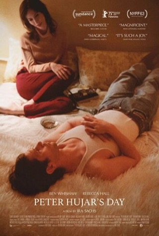

Peter Hujar's Day
From the festival
Play Trailer Ira Sachs’ latest film delivers a perfectly imagined time capsule of a memorable 1974 interview between friends. Rebecca Hall embodies writer Linda Rosenkranz, as she embarks on a project in which she asks fellow artists to note their activities—both significant and mundane—during a particular time period, followed by a conversation about those tasks. On this December day, Rosencranz records gay photographer Peter Hujar (Ben Whishaw) as he discusses calls from “Sontag,” a shoot with “Ginsberg,” delivering photos of Lauren Hutton, and more. Sachs pays precise cinematic detail to shadows and light as time passes, as well as the playful camaraderie between subject and interviewer. Whishaw, working from a book-length transcription of the encounter, channels Hujar’s New Jersey accent and his oscillation between confidence and insecurity while Hall, with warm eyes and active listening, elicits plangent details from a day that may seem “wasted” to Hujar, but is actually rather momentous. —Rod Armstrong
Source: Festival website programme (MVFF48): Wayback Machine copy; Festival film page: Wayback Machine copy; Poster from Wikipedia